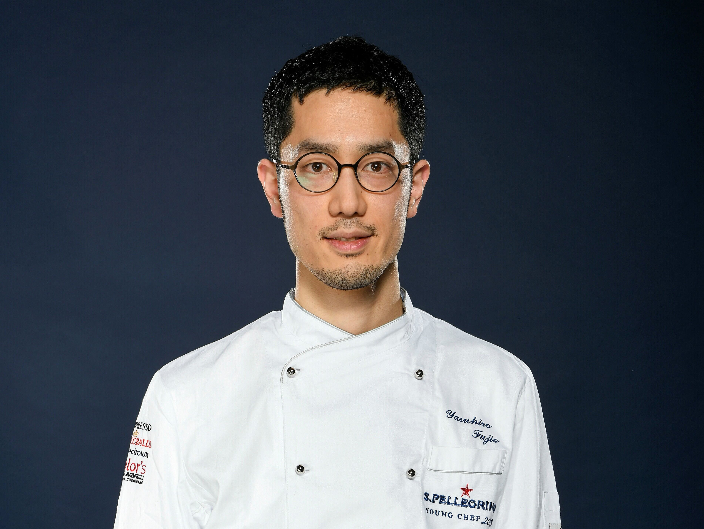

The London Restaurant is London's Great II designated fine dining restaurant for tourists on the River Thames. We offer a seasonal tasting menu from our British head chef, featuring modern and elegant dishes rooted in technique but stripped of essentials. Our focus is on sourcing the best ingredients that the British Isles have to offer, with dishes inspired by our head chef's overseas training and other food cultures.
ABOUT US

British
The Binchotan charcoal grill (total length 3m) installed in the open kitchen brings out the natural flavors of the ingredients to the maximum, and the dishes are prepared simply and dynamically.
British Head Chef
Steayen Mewire
After training at a hotel in England, he taught cooking at a university. He spent 15 years studying at British restaurants around the world. In 1979, when he was a grand chef at the British restaurant "Brighton Pierre", he was awarded one Michelin star.When he returned to Edmont, he became the general chef including the executive chef of the British restaurant "For Grain". In 2008, he also served as Executive Chef at the Hokkaido Toyako Summit.


French
This cheese is well-known as "Heidi's cheese". A round cheese is cut in half, warmed in a special machine and poured over the dish. There is no doubt that you will become addicted to the rich taste.
French Head Chef
Kadium Chritine
After joining the Hotel Metropolitan in 1990, he studied under Tierry at the French restaurant "For Grain". In 2004, he became head chef of Hotel Metropolitan London Dining & Bar TENQOO. After that, from 2016, he served as the first executive chef of the cruise train "TRAIN SUITE London". Since July 2017, he has been the executive chef of Black Widow at Hotel Metropolitan, which he continues to this day.


Japanese
Our specialty sukiyaki, made with loin meat seasoned with special warishita and goan (granulated sugar) and grilled in an iron pot. Comes with a stick, rice, pickles, and fruit.
Japanese Head Chef
Kaoru Kurosawa
One of the world's most recognized patissiers after gaining experience at numerous famous restaurants in Japan Joined the Tokyo Station Hotel in 2002 and moved to Hotel Metropolitan Edmont in 2006. Won two crowns of "Grand Prix" and "Best Technology Award" at the "1st Trophée de Cournonski Japon" held in August 2013.